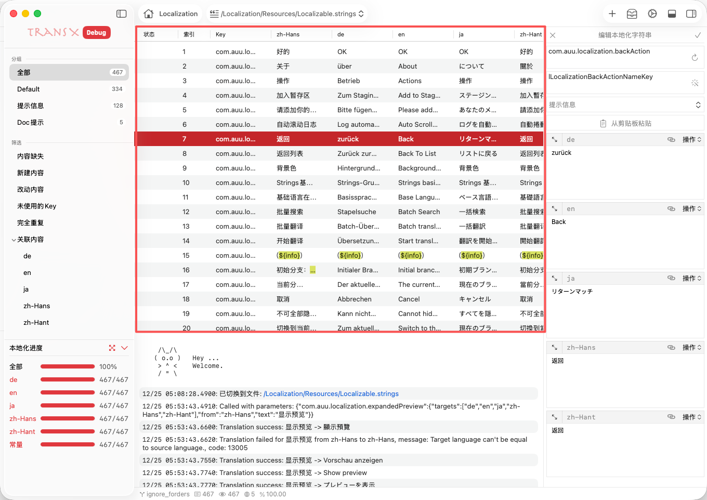

内容区是 TransX 主窗口中最核心的工作区域，专注于多语言字符串的批量管理、编辑与质量控制。该区域以表格/列表视图集中展示当前选中的 .strings 文件或分组下的所有本地化条目，支持多语言对比、批量操作、筛选、排序等多种高效管理手段。
每项功能均有详细文档说明，建议结合实际项目需求灵活运用。
详细介绍如何在多语言项目中集成 Git 分支管理，自动检测当前分支状态，防止内容误操作。包括分支切换时的内容同步、分支冲突提示、分支变更日志记录等。适用于团队协作、版本发布、A/B 测试等多场景，确保每个分支下的本地化内容始终一致且可追溯。
系统性讲解内容区的高级搜索与批量替换能力，支持正则表达式、模糊匹配、全局/分组/单文件范围。可对 key、内容、翻译状态等多维度进行精准定位和批量修正。典型应用包括术语统一、批量修正翻译、快速定位遗漏或错误内容，极大提升大项目的维护效率。
详解内容区的多种视图切换方式，包括单语言/多语言、分组/全部、索引/常量列等。每种模式适用于不同的管理和审核场景，如单语言模式便于专注翻译质量，多语言模式适合全局对比和一致性检查。支持自定义列宽、列顺序、显示/隐藏列，满足个性化需求。
介绍内容区的可视化自定义能力，包括索引列、常量列、基础语言优先、内容高亮、行高/列宽调整等。通过灵活配置显示选项，可优化大数据量下的可读性和对比体验，适合多语言内容审核、UI 适配、翻译校对等场景。
详细说明如何一键补全缺失的多语言内容，支持按基础语言智能填充、批量 AI 翻译、历史内容复用等多种方式。适用于版本发布前的内容补全、翻译进度统计、质量审核等场景，极大提升多语言覆盖率和一致性。
系统介绍如何根据本地化 key 自动生成 Swift/Objective-C 常量，支持多种命名风格、命名空间、类型注解。常量生成可避免硬编码错误，提升类型安全和团队协作效率。适合大型项目、多人协作、代码重构等场景。
详解内容区的多种复制能力，包括复制 key、单语言内容、全部内容、常量定义等。支持批量复制、格式化输出、导出为多种格式，便于内容迁移、跨项目复用、文档编写和代码集成。
介绍如何将选中内容批量复制到其他 .strings 文件或分组，支持内容去重、冲突检测、批量迁移。适合模块复用、内容重组、团队协作等多种场景。
详细讲解如何在同一 .strings 文件内将条目灵活移动到不同分组，支持批量移动、分组新建、分组重命名等。适用于内容重构、模块拆分、职责调整、团队分工等复杂场景，帮助保持本地化结构清晰有序。
介绍如何将条目跨 .strings 文件移动，支持批量操作、冲突检测、内容合并。适合大型项目的内容重组、模块化拆分、历史内容迁移等需求。
系统介绍暂存区的用法，可临时收集来自不同分组/文件的条目，支持批量处理、统一移动、批量导出等。适合跨模块整理、阶段性内容归档、多人协作等场景。
详细说明如何安全删除本地化条目，支持批量删除、回收站机制、误删恢复、删除日志追踪等。适合内容清理、版本迭代、质量管控等场景，保障数据安全。
介绍一键反选功能，支持大批量内容筛选、批量操作前的快速切换。适合复杂筛选、批量补全、批量移动等高效场景。
详细讲解如何在当前筛选/选中内容中快速定位目标条目，支持多条件组合、模糊匹配、正则查找。适合大数据量下的精准定位和高效处理。
系统性介绍内容区的多条件筛选能力，支持按分组、翻译状态、内容类型、修改时间等多维度聚焦目标条目。适合待处理内容聚合、翻译进度统计、质量审核等场景。
详细说明内容区的多种跳转能力，包括跳转到指定行、缺失内容、已编辑内容、批量定位等。适合大文件快速导航、内容核查、批量修正等高效场景。
系统介绍内容区的导出能力，支持批量导出选中/全部内容为 .strings、CSV、JSON 等多种格式，支持分组导出、内容筛选导出、导出模板自定义等。适合交付翻译、团队同步、外部审计等多场景。
详细说明如何一键返回全部分组或上一级视图，支持批量返回、历史导航、全局浏览等。适合多分组切换、全局内容审查、快速回溯等场景。